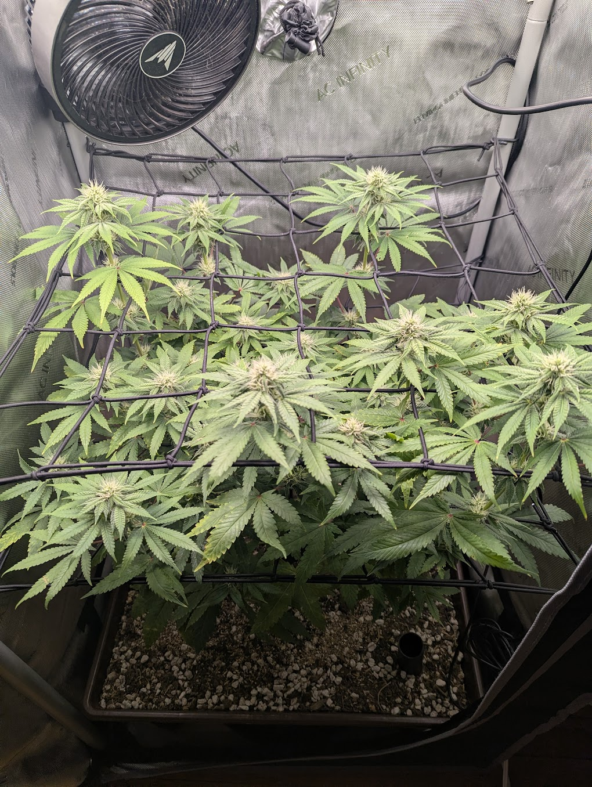
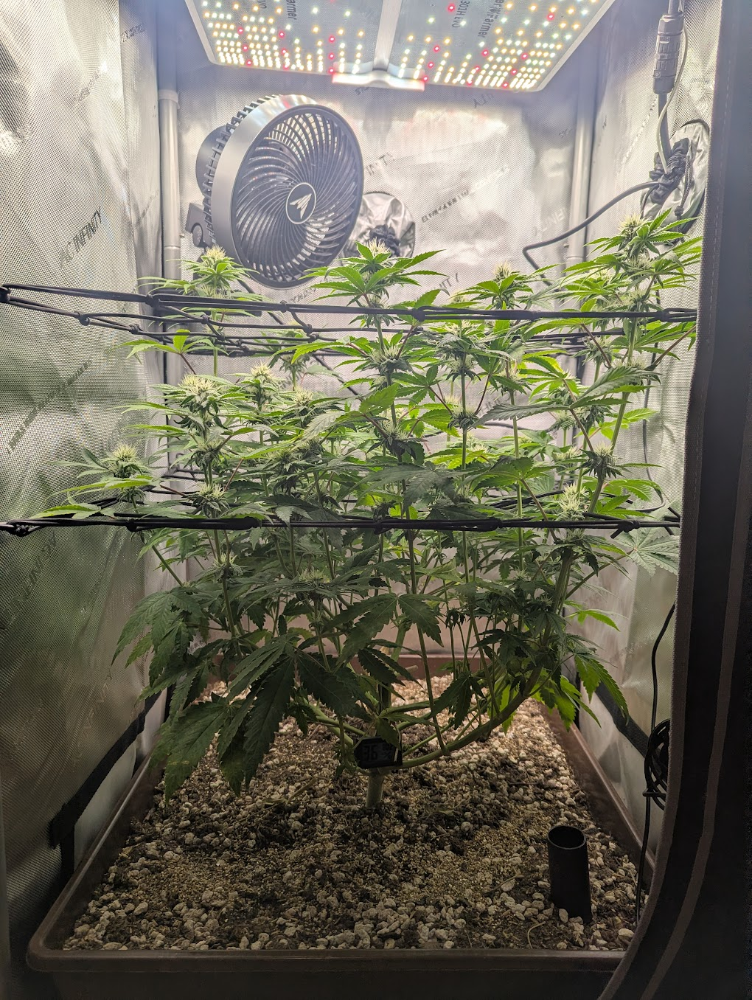
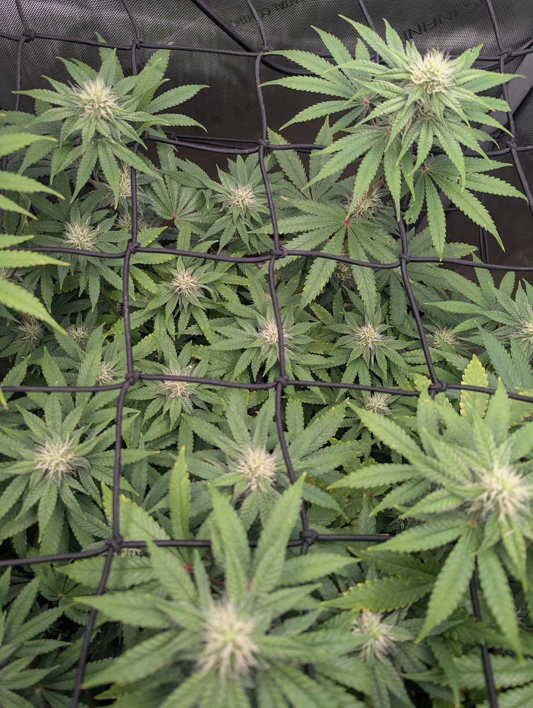
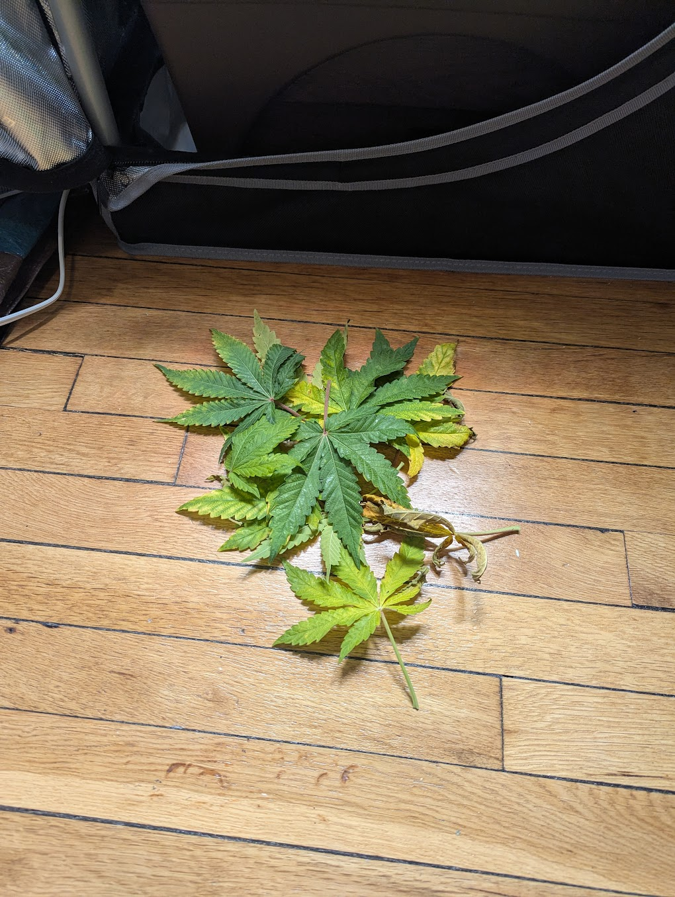
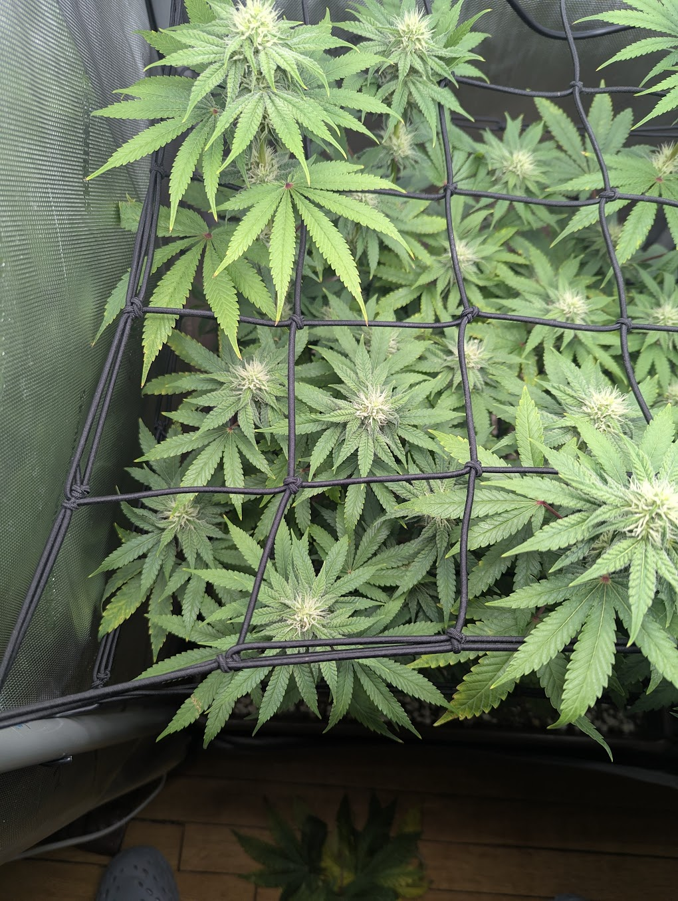
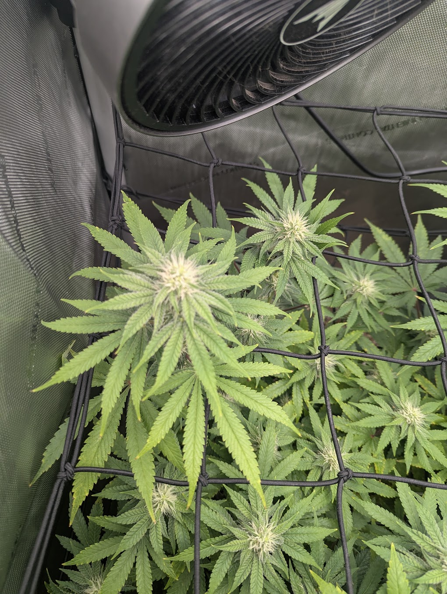
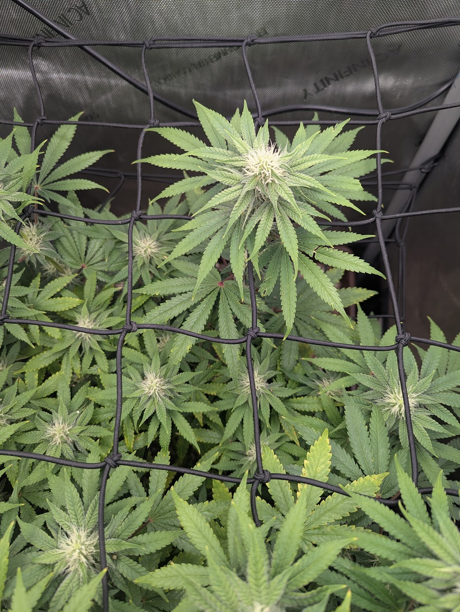
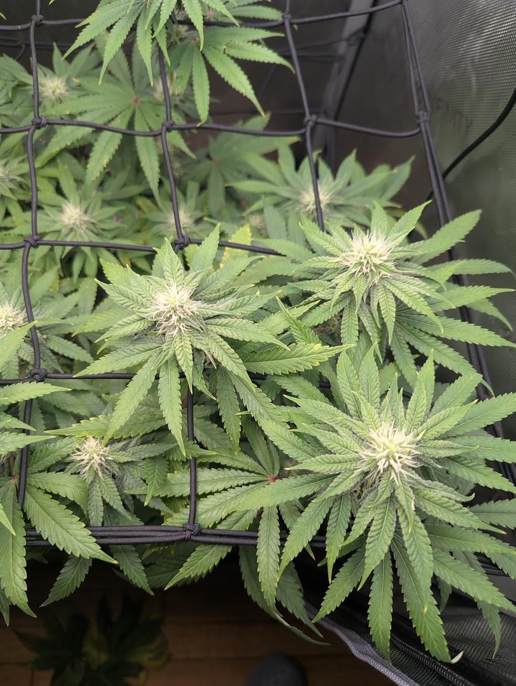

Manual multi-photo check-in · Wednesday, July 1, 2026 · compared against 6/28
Strain: Papaya Crush (Papaya × Bolo Runtz)Stage: Flower, day ~28 (flipped 6/3)Age: ~9 weeks from germ (4/28)Tent: 2×2 AC Infinity · SF-2000 ProMedium: Living soil, no-till
Healthy · on track
Three days on from 6/28, the plant is progressing normally into mid-flower. Pistil clusters are denser and the tops are fattening, color is a uniform deep green, and posture is turgid. You did a round of defoliation (the removed leaves are the yellowing lower/interior fans, image 3), which is on-schedule for this stage. The one thing to keep an eye on is the lower-leaf yellowing behind that defoliation — most likely normal shaded-leaf senescence, worth watching that it doesn't climb. No pests, mold, or bleaching anywhere in these shots.
1 · What you asked for
TLDR — Another manual close-up check-in: compare this 7/1 set to the 6/28 manual report, region by region, and say whether the plant is OK / improving / declining. New this time: a center shot and a defoliation shot, plus a request to start counting the colas / bud sites. Report generated for review before commit/push.
Show original prompt
let's do a manual up close report, compare it to the previous report..check out the previous one for format style..maybe we should write that down in our context or something..next question..any way we can start counting the colas/bud sights? first image is overall canopy, next side shot, next defoliation leaves, bottom left of canopy, top left, top right, bottom right, center of canopy.
Note: the manual-report format is now written down in daily_grow_report/manual_report_format.md.
2 · Snapshot

Overall canopyOK — even, well-trained, tops filling the net

Side profileOK — upright, two nets, clean lower structure

CenterOK — dense cluster of frosty tops

Defoliated leaveswatch — lower/interior fans, some yellowing
distinct frosty tops visible in the center frame (img 8)
This is an estimate, not a precise count. Method: counting distinct white-pistil flowering tops in the top-down canopy (img 1) and center (img 8), using the scrog squares as a reference. Overlap and occlusion make an exact number unreliable from a photo, so treat the trend across reports as the real signal, not the absolute figure. For a true count, tally physically at a defoliation, or count occupied scrog squares. (See the counting notes in manual_report_format.md; this could later be semi-automated by having each daily quadrant tile count its tops and summing them.)
4 · 6/28 → 7/1, side by side
Signal
6/28 (day ~25)
7/1 (day ~28)
Trend
Pistils / bud sites
Denser pistils, tops fattening
More pistil density, tops visibly fatter and frostier
↑ better
Canopy fill
Tops woven into an even plane
Fuller, tops standing above the net across the footprint
↑ better
Leaf color
Uniform deep green
Deep green up top; lower/interior fans yellowing (some removed)
→ watch
Canopy management
Second net filled
Round of defoliation done (lower/shaded fans)
↑ done
Posture / turgor
Turgid, no droop
Same — turgid, flat, no wilt
→ steady
Pests / mold
Clean
Clean in all 8 shots
→ clear
5 · Per-region analysis

Bottom-leftOK — frosty tops, white pistils; a few yellow leaf-tips; red petioles present (benign, see flags).

Top-leftOK — colas under the fan developing well; new growth clean; minor tip yellowing only.

Top-rightOK — a lead cola stacking pistils; deep green, no bleaching on the tops nearest the light.

Bottom-rightOK — several fattening tops, frosty; turgid leaves, no pests/webbing.CenterOK — dense cluster of frosty colas, the strongest bud development in the canopy.SideOK — good vertical structure through both nets, open lower stems, clean soil surface.
Every region reads healthy: uniform deep green up top, fattening pistil-dense tops, turgid flat leaves, and no webbing, stippling, powder, or gray fluff in any close-up. Growth is clearly ahead of 6/28.
6 · Flags checked
Growth progressing
More pistils and fatter, frostier tops than 6/28. No stall — clear flower development over three days.
Pests / mold clear
No stippling, webbing, powder, or bud-rot in any of the eight shots. Keep up underside checks given the 6/9 mite history.
Structure good
Even canopy through both scrog nets; today's defoliation opens interior airflow, which helps against mold as the buds fatten (KB 05).
Lower-leaf yellowing watch
The removed leaves (img 3) are lower/interior fans that had yellowed. Most likely normal shaded-leaf senescence plus the defoliation cleanup, but note it's a touch early (day ~28) for heavy fade. Watch whether it climbs up the plant. If it accelerates into upper growth, treat as possible nitrogen draw — in living soil the fix is a top-dress/tea, not bottled nutrients or a flush (KB 07). Mobile-nutrient logic: N shows on lower/older leaves first (KB 02).
Red/purple petioles benign
Present again on several leaves. Treated as benign color per the framework (KB 01) — the only symptom, plant otherwise healthy. Not called a deficiency or a strain "genetic fact." (A Papaya parent can show cool-night violet per Strainpedia, but that is unconfirmed for Papaya Crush — see the strain file.)
7 · Assumptions (what's inferred, not measured)
Cola count is a visual estimate (±). Occlusion prevents an exact number; the trend matters more than the figure.
Lower-leaf yellowing = senescence/shading is the leading read, not confirmed. The alternative (early N draw) can't be ruled out from photos; watching the trend distinguishes them.
Bud identity / frost inferred from appearance at photo resolution (12/12 flower per grow context), not measured.
Stage day ~28 derived from the 6/3 flip date in grow context.
Sources: knowledge_base framework (01), deficiencies (02), diseases (05), organic/living-soil (07), and the Papaya Crush strain file. Comparison baseline: manual-report 2026-06-28.
8 · Conclusion
On track and improving. At day ~28 this is a healthy, pest-free Papaya Crush moving through mid-flower, three days ahead of the 6/28 baseline with denser pistils and fatter tops. Today's defoliation is well-timed. The single live item is routine: watch the lower-leaf yellowing to confirm it's senescence and not the start of a nitrogen draw.
9 · Next actions
Watch the lower-leaf fade — if it stays low and slow, it's senescence; if it climbs into upper growth, top-dress/tea (living-soil, not bottled N).
Keep airflow up post-defoliation — good for the fattening buds; maintain flowering RH ~40–55%.
Trichome checks soon — day ~28 is early, but start loupe checks around the usual ~wk7 window and track.
Underside pest spot-checks — continue given the 6/9 mite history.
Log the cola estimate (~25–35) so the next report can show the trend.